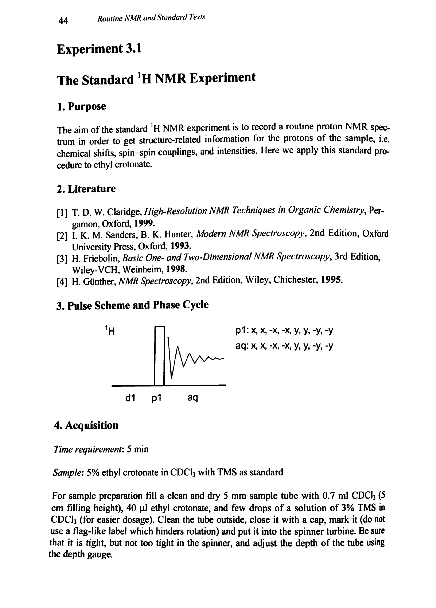
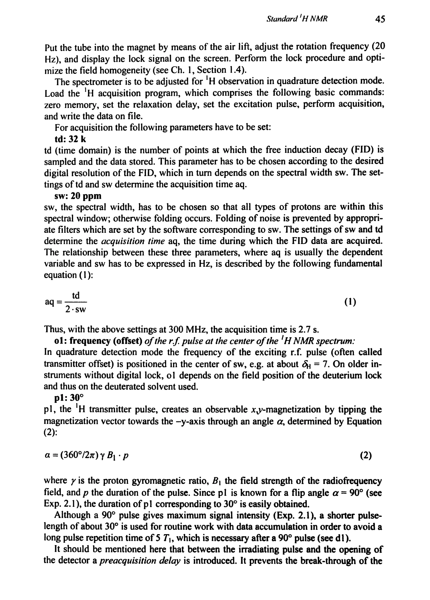
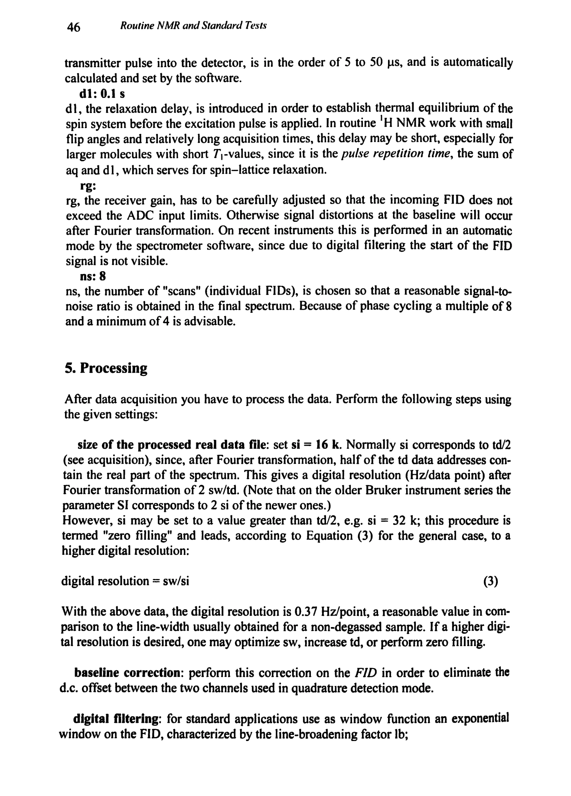
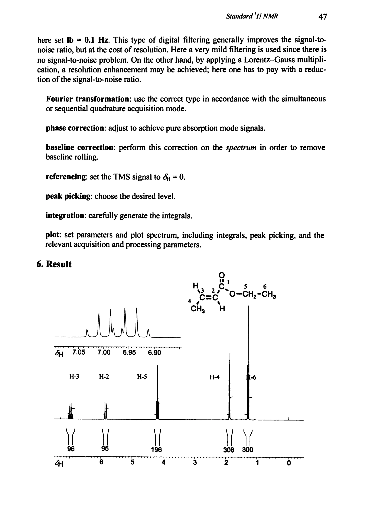
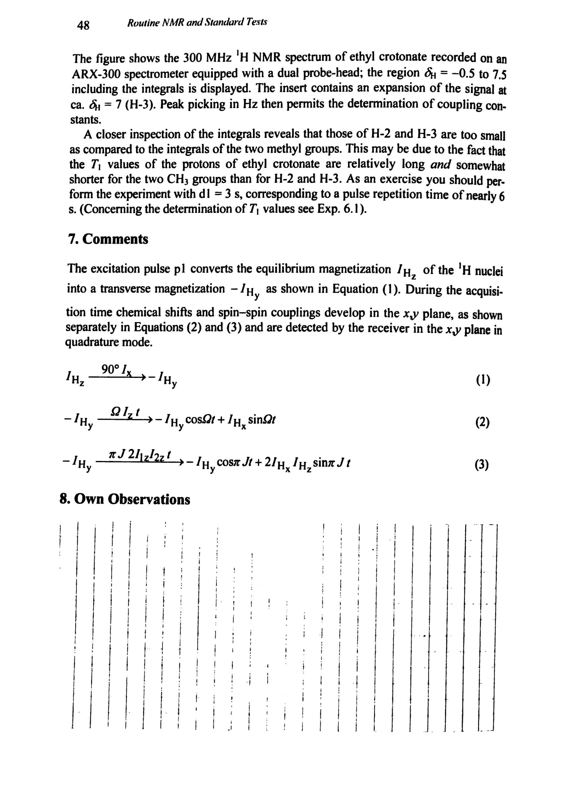

Experiment 3.1
The Standard 1H NMR Experiment
标准 ¹H NMR 实验
PDF 59–63 · 原书 44–48 · Routine NMR and Standard Tests





核磁共振实验方法、脉冲序列与谱图实践
Experiment 3.1
标准 ¹H NMR 实验
PDF 59–63 · 原书 44–48 · Routine NMR and Standard Tests




